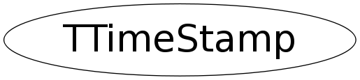

class TTimeStamp
The TTimeStamp encapsulates seconds and ns since EPOCH This extends (and isolates) struct timespec struct timespec { time_t tv_sec; /* seconds * long tv_nsec; /* nanoseconds * } time_t seconds is relative to Jan 1, 1970 00:00:00 UTC No accounting of leap seconds is made. Due to ROOT/CINT limitations TTimeStamp does not explicitly hold a timespec struct; attempting to do so means the Streamer must be hand written. Instead we have chosen to simply contain similar fields within the private area of this class. NOTE: the use of time_t (and its default implementation as a 32 int) implies overflow conditions occurs somewhere around Jan 18, 19:14:07, 2038. If this experiment is still going when it becomes significant someone will have to deal with it.
Function Members (Methods)
public:
| TTimeStamp() | |
| TTimeStamp(const timespec_t& ts) | |
| TTimeStamp(const TTimeStamp&) | |
| TTimeStamp(time_t t, Int_t nsec) | |
| TTimeStamp(UInt_t tloc, Bool_t isUTC = kTRUE, Int_t secOffset = 0, Bool_t dosDate = kFALSE) | |
| TTimeStamp(UInt_t date, UInt_t time, UInt_t nsec, Bool_t isUTC = kTRUE, Int_t secOffset = 0) | |
| TTimeStamp(UInt_t year, UInt_t month, UInt_t day, UInt_t hour, UInt_t min, UInt_t sec, UInt_t nsec = 0, Bool_t isUTC = kTRUE, Int_t secOffset = 0) | |
| virtual | ~TTimeStamp() |
| void | Add(const TTimeStamp& offset) |
| Double_t | AsDouble() const |
| Double_t | AsJulianDate() const |
| const char* | AsString(Option_t* option = "") const |
| static TClass* | Class() |
| void | Copy(TTimeStamp& ts) const |
| static void | DumpTMStruct(const tm_t& tmstruct) |
| UInt_t | GetDate(Bool_t inUTC = kTRUE, Int_t secOffset = 0, UInt_t* year = 0, UInt_t* month = 0, UInt_t* day = 0) const |
| Int_t | GetDayOfWeek(Bool_t inUTC = kTRUE, Int_t secOffset = 0) const |
| static Int_t | GetDayOfWeek(Int_t day, Int_t month, Int_t year) |
| Int_t | GetDayOfYear(Bool_t inUTC = kTRUE, Int_t secOffset = 0) const |
| static Int_t | GetDayOfYear(Int_t day, Int_t month, Int_t year) |
| Int_t | GetMonth(Bool_t inUTC = kTRUE, Int_t secOffset = 0) const |
| Int_t | GetNanoSec() const |
| time_t | GetSec() const |
| UInt_t | GetTime(Bool_t inUTC = kTRUE, Int_t secOffset = 0, UInt_t* hour = 0, UInt_t* min = 0, UInt_t* sec = 0) const |
| timespec_t | GetTimeSpec() const |
| Int_t | GetWeek(Bool_t inUTC = kTRUE, Int_t secOffset = 0) const |
| static Int_t | GetWeek(Int_t day, Int_t month, Int_t year) |
| static Int_t | GetZoneOffset() |
| virtual TClass* | IsA() const |
| static Bool_t | IsLeapYear(Int_t year) |
| Bool_t | IsLeapYear(Bool_t inUTC = kTRUE, Int_t secOffset = 0) const |
| static time_t | MktimeFromUTC(tm_t* tmstruct) |
| double | operator double() const |
| TTimeStamp& | operator=(const TTimeStamp&) |
| void | Print(Option_t* option = "") const |
| void | Set() |
| void | Set(UInt_t tloc, Bool_t isUTC, Int_t secOffset, Bool_t dosDate) |
| void | Set(Int_t date, Int_t time, Int_t nsec, Bool_t isUTC, Int_t secOffset) |
| void | Set(Int_t year, Int_t month, Int_t day, Int_t hour, Int_t min, Int_t sec, Int_t nsec, Bool_t isUTC, Int_t secOffset) |
| void | SetNanoSec(Int_t nsec) |
| void | SetSec(Int_t sec) |
| virtual void | ShowMembers(TMemberInspector& insp) |
| virtual void | Streamer(TBuffer& b) |
| void | StreamerNVirtual(TBuffer& b) |
private:
| void | NormalizeNanoSec() |
Class Charts
{kind=link}
{kind=link}
{kind=link}
{kind=link}

Function documentation
TTimeStamp()
Default ctor. Create a TTimeStamp and set it to the current time (as best possible). The nanosecond part is faked so that subsequenct calls simply add 1 to ensure that sequential calls are distinct (and sortable).
TTimeStamp(UInt_t year, UInt_t month, UInt_t day, UInt_t hour, UInt_t min, UInt_t sec, UInt_t nsec = 0, Bool_t isUTC = kTRUE, Int_t secOffset = 0)
Create a TTimeStamp and set it to the specified year, month, day, time, hour, minute, second and nanosec. If !isUTC then it is assumed to be the standard local time zone. If local time is PST then one can use TTimeStamp(year,month,day,hour,min,sec,nsec,kFALSE,0); or Int_t secOffset = 8*60*60; TTimeStamp(year,month,day,hour,min,sec,nsec,kTRUE,8*60*60);
TTimeStamp(UInt_t date, UInt_t time, UInt_t nsec, Bool_t isUTC = kTRUE, Int_t secOffset = 0)
Create a TTimeStamp and set it to the specified date, time, nanosec. If !isUTC then it is assumed to be the standard local time zone.
TTimeStamp(UInt_t tloc, Bool_t isUTC = kTRUE, Int_t secOffset = 0, Bool_t dosDate = kFALSE)
Create a TTimeStamp and set it to tloc which must be a time_t value returned by time(). This value is the number of seconds since the EPOCH (i.e. 00:00:00 on Jan 1m 1970). If dosDate is true then the input is a dosDate value.
const Char_t * AsString(Option_t* option = "") const
Return the date & time as a string. Result is pointer to a statically allocated string. User should copy this into their own buffer before calling this method again. Option "l" returns it in local zone format (can be applied to default or compact format). Default format is RFC822 compliant: "Mon, 02 Jan 2001 18:11:12 +0000 (GMT) +999999999 nsec" "Mon, 02 Jan 2001 10:11:12 -0800 (PST) +999999999 nsec" Option "c" compact is (almost) ISO 8601 compliant: "2001-01-02 18:11:12.9999999999Z" "2001-01-02 10:11:12.9999999999-0800" if PST * uses "-" as date separator as specified in ISO 8601 * uses "." rather than preferred "," for decimal separator * -HHMM is the difference between local and UTC (if behind, + if ahead). The "-HHMM" is replaced with "Z" if given as UTC. To be strictly conforming it should use "T" instead of the blank separating the date and time. Option "2" returns as {sec,nsec} integers. Option "s" returns "2001-01-02 18:11:12" with an implied UTC, overrides "l" option. Internally uses a circular list of buffers to avoid problems using AsString multiple times in a single statement.
UInt_t GetDate(Bool_t inUTC = kTRUE, Int_t secOffset = 0, UInt_t* year = 0, UInt_t* month = 0, UInt_t* day = 0) const
Return date in form of 19971224 (i.e. 24/12/1997), if non-zero pointers supplied for year, month, day fill those as well.
UInt_t GetTime(Bool_t inUTC = kTRUE, Int_t secOffset = 0, UInt_t* hour = 0, UInt_t* min = 0, UInt_t* sec = 0) const
Return time in form of 123623 (i.e. 12:36:23), if non-zero pointers supplied for hour, min, sec fill those as well.
Int_t GetDayOfYear(Bool_t inUTC = kTRUE, Int_t secOffset = 0) const
Get the day of the year represented by this time stamp value. Valid return values range between 1 and 366, where January 1 = 1.
Int_t GetDayOfWeek(Bool_t inUTC = kTRUE, Int_t secOffset = 0) const
Method is using Zeller's formula for calculating the day number. Valid return values range between 1 and 7, where Monday = 1.
Int_t GetMonth(Bool_t inUTC = kTRUE, Int_t secOffset = 0) const
Get the month of the year. Valid return values are between 1 and 12.
Int_t GetWeek(Bool_t inUTC = kTRUE, Int_t secOffset = 0) const
Get the week of the year. Valid week values are between 1 and 53. The return value is the year*100+week (1 Jan may be in the last week of the previous year so the year must be returned too).
Bool_t IsLeapYear(Bool_t inUTC = kTRUE, Int_t secOffset = 0) const
Is the year a leap year. The calendar year is 365 days long, unless the year is exactly divisible by 4, in which case an extra day is added to February to make the year 366 days long. If the year is the last year of a century, eg. 1700, 1800, 1900, 2000, then it is only a leap year if it is exactly divisible by 400. Therefore, 1900 wasn't a leap year but 2000 was. The reason for these rules is to bring the average length of the calendar year into line with the length of the Earth's orbit around the Sun, so that the seasons always occur during the same months each year.
Int_t GetZoneOffset()
Static method returning local (current) time zone offset from UTC. This is the value in seconds one must add to the local time to arrive at Coordinated Universal Time, so it is negative east of the Prime Meridian.
void Set()
Set Date/Time to current time as reported by the system. No accounting for nanoseconds with std ANSI functions, ns part faked so that subsequent calls simply add 1 to it this ensures that calls within the same second come back distinct (and sortable). Time is since Jan 1, 1970.
void Set(Int_t year, Int_t month, Int_t day, Int_t hour, Int_t min, Int_t sec, Int_t nsec, Bool_t isUTC, Int_t secOffset)
Set Date/Time from components. Month & day both use normal 1..12 and 1..31 counting, hours, min, sec run from 0 to 23, 59, 59 respectively, secOffset provides method for adjusting for alternative timezones "year" | 0 1 ... 37 | 38...69 | 70 .. 100 101 .. 137 true | 2000 2001 2037 | undefined | 1970 2000 2001 .. 2037 "year" | 138...1969 | 1970 .. 2037 | ... true | undefined | 1970 .. 2037 | undefined
void Set(Int_t date, Int_t time, Int_t nsec, Bool_t isUTC, Int_t secOffset)
Set date/time from integers of the form [yy]YYMMDD and HHMMSS, assume UTC (UTC) components: MM: 01=January .. 12=December DD: 01 .. 31 HH: 00=midnight .. 23 MM: 00 .. 59 SS: 00 .. 69 Date must be in format 980418 or 19980418 1001127 or 20001127 (i.e. year 100 = 2000), time must be in format 224512 (second precision), date must be >= 700101.
time_t MktimeFromUTC(tm_t* tmstruct)
Equivalent of standard routine "mktime" but using the assumption that tm struct is filled with UTC, not local, time. This version *ISN'T* configured to handle every possible weirdness of out-of-range values in the case of normalizing the tm struct. This version *DOESN'T* correctly handle values that can't be fit into a time_t (i.e. beyond year 2038-01-18 19:14:07, or before the start of Epoch).
Int_t GetDayOfYear(Int_t day, Int_t month, Int_t year)
Get the day of the year represented by day, month and year. Valid return values range between 1 and 366, where January 1 = 1.
Int_t GetDayOfWeek(Int_t day, Int_t month, Int_t year)
Method is using Zeller's formula for calculating the day number. Valid return values range between 1 and 7, where Monday = 1.
Int_t GetWeek(Int_t day, Int_t month, Int_t year)
Get the week of the year. Valid week values are between 1 and 53. The return value is the year*100+week (1 Jan may be in the last week of the previous year so the year must be returned too).
Bool_t IsLeapYear(Int_t year)
Is the given year a leap year. The calendar year is 365 days long, unless the year is exactly divisible by 4, in which case an extra day is added to February to make the year 366 days long. If the year is the last year of a century, eg. 1700, 1800, 1900, 2000, then it is only a leap year if it is exactly divisible by 400. Therefore, 1900 wasn't a leap year but 2000 was. The reason for these rules is to bring the average length of the calendar year into line with the length of the Earth's orbit around the Sun, so that the seasons always occur during the same months each year.
void DumpTMStruct(const tm_t& tmstruct)
Print out the "tm" structure: tmstruct.tm_year = year; // years since 1900 tmstruct.tm_mon = month-1; // months since Jan [0,11] tmstruct.tm_mday = day; // day of the month [1,31] tmstruct.tm_hour = hour; // hours since midnight [0,23] tmstruct.tm_min = min; // minutes after the hour [0,59] tmstruct.tm_sec = sec; // seconds after the minute [0,59] tmstruct.tm_wday // day of week [0,6] tmstruct.tm_yday // days in year [0,365] tmstruct.tm_isdst // DST [-1/0/1] (unknown,false,true)
timespec_t GetTimeSpec() const